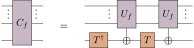
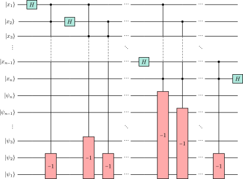
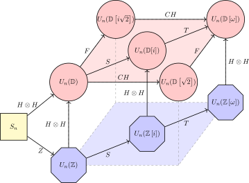
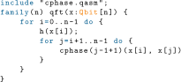
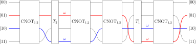
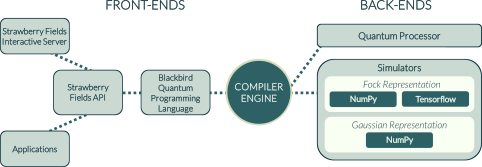
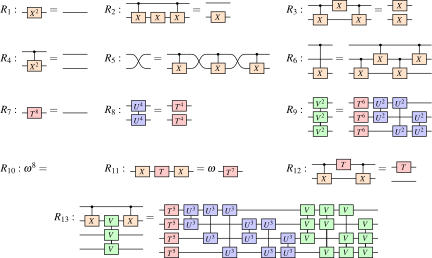
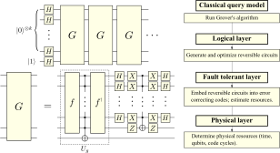
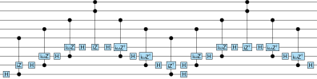
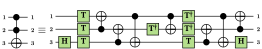

Matt Amy
School of Computing Science
Simon Fraser University


Contact
| Email: | matt_amy at sfu.ca |
| Office: | TASC1 9215 |
| Address: | School of Computing Science |
| Simon Fraser University | |
| 8888 University Drive | |
| Burnaby, British Columbia, Canada | |
| V5A 1S6 |
About
Assistant professor at Simon Fraser University
and Canada Research Chair in Quantum Computing.
My research focuses on the development and applications of
tools for formally reasoning
about quantum computations and software.
I generally enjoy finding mathematical solutions to practical problems,
particularly related to programming and compilation.
I've also been known to enjoy coding and
math rock.
Publications and preprints
-
Optimising T-count is NP-hard.
With J. van de Wetering.
[pdf / arXiv]More
In this short note we show that Boolean satisfiability reduces to finding the optimal number of T gates of a quantum circuit, and hence that optimising T-count is NP-hard. We show that the same argument extends to optimising the number of Toffoli gates in a reversible classical circuit, and we furthermore find an upper bound to the T-count problem of $\text{NP}^{\text{NQP}}$.

-
Complete equational theories for the sum-over-paths with unbalanced amplitudes.
Proc. Quantum Physics & Logic (QPL), 2023.
[pdf / slides / arXiv / doi]More
Vilmart recently gave a complete equational theory for the balanced sum-over-paths over Toffoli-Hadamard circuits, and by extension Clifford+$\mathrm{diag}(1, \zeta_{2^k})$ circuits. Their theory is based on the phase-free ZH-calculus which crucially omits the average rule of the full ZH-calculus, dis-allowing the local summation of amplitudes. Here we study the question of completeness in unbalanced path sums which naturally support local summation. We give a concrete syntax for the unbalanced sum-over-paths and show that, together with symbolic multilinear algebra and the interference rule, various formulations of the average and ortho rules of the ZH-calculus are sufficient to give complete equational theories over arbitrary rings and fields.

-
Improved Synthesis of Toffoli-Hadamard Circuits.
With A. N Glaudell, S. Li, and N.J. Ross.
Proc. Reversible Computation (RC), 2023 (to appear).
[pdf / arXiv]More
The matrices that can be exactly represented by a circuit over the Toffoli-Hadamard gate set are the orthogonal matrices of the form $M/\sqrt{2}{}^k$, where $M$ is an integer matrix and $k$ is a nonnegative integer. The exact synthesis problem for this gate set is the problem of constructing a circuit for a given such matrix. Existing methods produce circuits consisting of $O(2^n\log(n)k)$ gates, where $n$ is the dimension of the matrix. In this paper, we provide two improved synthesis methods. First, we show that a technique introduced by Kliuchnikov in 2013 for Clifford+$T$ circuits can be straightforwardly adapted to Toffoli-Hadamard circuits, reducing the complexity of the synthesized circuit from $O(2^n\log(n)k)$ to $O(n^2\log(n)k)$. Then, we present an alternative synthesis method of similarly improved cost, but whose application is restricted to circuits on no more than three qubits. Our results also apply to orthogonal matrices over the dyadic fractions, which correspond to circuits using the 2-qubit gate $H\otimes H$, rather than the usual single-qubit Hadamard gate $H$.
-
Catalytic Embeddings of Quantum Circuits.
With M. Crawford, A. N Glaudell, M. L Macasieb, S. S Mendelson, and N.J. Ross.
[pdf / arXiv]More
If a set $\mathbb{G}$ of quantum gates is countable, then the operators that can be exactly represented by a circuit over $\mathbb{G}$ form a strict subset of the collection of all unitary operators. When $\mathbb{G}$ is universal, one circumvents this limitation by resorting to repeated gate approximations: every occurrence of a gate which cannot be exactly represented over $\mathbb{G}$ is replaced by an approximating circuit. Here, we introduce catalytic embeddings, which provide an alternative to repeated gate approximations. With catalytic embeddings, approximations are relegated to the preparation of a fixed number of reusable resource states called catalysts. Because the catalysts only need to be prepared once, when catalytic embeddings exist they always produce shorter circuits, in the limit of increasing gate count and target precision. In the present paper, we lay the foundations of the theory of catalytic embeddings and we establish several of their structural properties. In addition, we provide methods to design catalytic embeddings, showing that their construction can be reduced to that of a single fixed matrix when the gates involved have entries in well-behaved rings of algebraic numbers. Finally, we showcase some concrete examples and applications. Notably, we show that catalytic embeddings generalize a technique previously used to implement the Quantum Fourier Transform over the Clifford+$T$ gate set with $O(n)$ gate approximations.

-
Symbolic synthesis of Clifford circuits and beyond.
With O. Bennett-Gibbs and N.J. Ross.
Proc. Quantum Physics & Logic (QPL), 2022 (to appear).
[pdf / slides / arXiv]More
Path sums are a convenient symbolic formalism for quantum operations with applications to the simulation, optimization, and verification of quantum protocols. Unlike quantum circuits, path sums are not limited to unitary operations, but can express arbitrary linear ones. Two problems, therefore, naturally arise in the study of path sums: the unitarity problem and the extraction problem. The former is the problem of deciding whether a given path sum represents a unitary operator. The latter is the problem of constructing a quantum circuit, given a path sum promised to represent a unitary operator.
We show that the unitarity problem is co-NP-hard in general, but that it is in P when restricted to Clifford path sums. We then provide an algorithm to synthesize a Clifford circuit from a unitary Clifford path sum. The circuits produced by our extraction algorithm are of the form C1HC2, where C1 and C2 are Hadamard-free circuits and H is a layer of Hadamard gates. We also provide a heuristic generalization of our extraction algorithm to arbitrary path sums. While this algorithm is not guaranteed to succeed, it often succeeds and typically produces natural looking circuits. Alongside applications to the optimization and decompilation of quantum circuits, we demonstrate the capability of our algorithm by synthesizing the standard quantum Fourier transform directly from a path sum. -
The phase/state duality in reversible circuit design.
With N.J. Ross.
Physical Review A 104, 052602, 2021.
[pdf / slides / arXiv / doi]More
The reversible implementation of classical functions accounts for the bulk of most known quantum algorithms. As a result, a number of reversible circuit constructions over the Clifford+$T$ gate set have been developed in recent years which use both the state and phase spaces, or $X$ and $Z$ bases, to reduce circuit costs beyond what is possible at the strictly classical level. We study and generalize two particular classes of these constructions: relative phase circuits, including Giles and Selinger's multiply-controlled $iX$ gates and Maslov's $4$ qubit Toffoli gate, and measurement-assisted circuits, including Jones' Toffoli gate and Gidney's temporary logical-AND. In doing so, we introduce general methods for implementing classical functions up to phase and for measurement-assisted termination of temporary values. We then apply these techniques to find novel $T$-count efficient constructions of some classical functions in space-constrained regimes, notably multiply-controlled Toffoli gates and temporary products.
-
staq -- A full-stack quantum processing toolkit.
With V. Gheorghiu.
Quantum Science and Technology, 2020.
[pdf / arXiv / doi]More
We describe 'staq', a full-stack quantum processing toolkit written in standard C++. 'staq' is a quantum compiler toolkit, comprising of tools that range from quantum optimizers and translators to physical mappers for quantum devices with restricted connectives. The design of 'staq' is inspired from the UNIX philosophy of "less is more", i.e. 'staq' achieves complex functionality via combining (piping) small tools, each of which performs a single task using the most advanced current state-of-the-art methods. We also provide a set of illustrative benchmarks.
-
Number-Theoretic Characterizations of Some Restricted Clifford+T Circuits.
With N.J. Ross and A.N. Glaudell.
Quantum 4, 2020.
[pdf / arXiv / doi]More
Kliuchnikov, Maslov, and Mosca proved in 2012 that a $2 \times 2$ unitary matrix $V$ can be exactly represented by a single-qubit Clifford+$T$ circuit if and only if the entries of $V$ belong to the ring $\mathbb{Z}\left[1/\sqrt{2}, i\right]$. Later that year, Giles and Selinger showed that the same restriction applies to matrices that can be exactly represented by a multi-qubit Clifford+$T$ circuit. These number-theoretic characterizations shed new light upon the structure of Clifford+$T$ circuits and led to remarkable developments in the field of quantum compiling. In the present paper, we provide number-theoretic characterizations for certain restricted Clifford+$T$ circuits by considering unitary matrices over subrings of $\mathbb{Z}\left[1/\sqrt{2}, i\right]$. We focus on the subrings $\mathbb{Z}\left[1/2\right]$, $\mathbb{Z}\left[1/\sqrt{2}\right]$, $\mathbb{Z}\left[1/\sqrt{\mbox{-}2}\right]$, and $\mathbb{Z}\left[1/2,i\right]$, and we prove that unitary matrices with entries in these rings correspond to circuits over well-known universal gate sets. In each case, the desired gate set is obtained by extending the set of classical reversible gates $\{X,CX,CCX\}$ with an analogue of the Hadamard gate and an optional phase gate.

-
Sized Types for Low-Level Quantum Metaprogramming.
Proc. Reversible Computation (RC), 2019.
[pdf / slides / arXiv / doi]More
One of the most fundamental aspects of quantum circuit design is the concept of families of circuits parametrized by an instance size. As in classical programming, metaprogramming allows the programmer to write entire families of circuits simultaneously, an ability which is of particular importance in the context of quantum computing as algorithms frequently use arithmetic over non-standard word lengths. In this work, we introduce metaQASM, a typed extension of the openQASM language supporting the metaprogramming of circuit families. Our language and type system, built around a lightweight implementation of sized types, supports subtyping over register sizes and is moreover type-safe. In particular, we prove that our system is strongly normalizing, and as such any well-typed metaQASM program can be statically unrolled into a finite circuit.

-
Formal Methods in Quantum Circuit Design.
PhD thesis.
[pdf]More
The design and compilation of correct, efficient quantum circuits is integral to the future operation of quantum computers. This thesis makes contributions to the problems of optimizing and verifying quantum circuits, with an emphasis on the development of formal models for such purposes. We also present software implementations of these methods, which together form a full stack of tools for the design of optimized, formally verified quantum oracles.
On the optimization side, we study methods for the optimization of $R_Z$ and CNOT gates in Clifford+$R_Z$ circuits. We develop a general, efficient optimization algorithm called phase folding, which reduces the number of $R_Z$ gates without increasing any metrics by computing its phase polynomial. This algorithm can further be combined with synthesis techniques for CNOT-dihedral operators to optimize circuits with respect to particular costs. We then study the optimal synthesis problem for CNOT-dihedral operators from the perspectives of $R_Z$ and CNOT gate optimization. In the case of $R_Z$ gate optimization, we show that the optimal synthesis problem is polynomial-time equivalent to minimum-distance decoding in certain Reed-Muller codes. For the CNOT optimization problem, we show that the optimal synthesis problem is at least as hard as a combinatorial problem related to Gray codes. In both cases, we develop heuristics for the optimal synthesis problem, which together with phase folding reduces $T$ counts by 42% and CNOT counts by 22% across a suite of real-world benchmarks.
From the perspective of formal verification, we make two contributions. The first is the development of a formal model of quantum circuits with ancillary bits based on the Feynman path integral, along with a concrete verification algorithm. The path integral model, with some syntactic sugar, further doubles as a natural specification language for quantum computations. Our experiments show some practical circuits with up to hundreds of qubits can be efficiently verified. Our second contribution is a formally verified, optimizing compiler for reversible circuits. The compiler compiles a classical, irreversible language to reversible circuits, with a formal, machine-checked proof of correctness written in the proof assistant F$^\star$. The compiler is structured as a partial evaluator, allowing verification to be carried out significantly faster than previous results.
-
T-count optimization and Reed-Muller codes.
With M. Mosca.
IEEE Transactions on Information Theory 65(8), 2019.
[pdf / slides / arXiv / doi]More
In this paper, we study the close relationship between Reed-Muller codes and single-qubit phase gates from the perspective of $T$-count optimization. We prove that minimizing the number of $T$ gates in an $n$-qubit quantum circuit over CNOT and $T$, together with the Clifford group powers of $T$, corresponds to finding a minimum distance decoding of a length $2^n-1$ binary vector in the order $n-4$ punctured Reed-Muller code. Moreover, we show that the problems are polynomially equivalent in the length of the code. As a consequence, we derive an algorithm for the optimization of $T$-count in quantum circuits based on Reed-Muller decoders, along with a new upper bound of $O(n^2)$ on the number of $T$ gates required to implement an $n$-qubit unitary over CNOT and $T$ gates. We further generalize this result to show that minimizing small angle rotations corresponds to decoding lower order binary Reed-Muller codes. In particular, we show that minimizing the number of $R_Z(2\pi/m)$ gates for any integer $m$ is equivalent to minimum distance decoding in $\mathcal{RM}(n - k - 1, n)^*$, where $k$ is the highest power of $2$ dividing $m$.
Note: Chapter 5 of Formal Methods in Quantum Circuit Design contains an updated presentation. -
Strawberry fields: A software platform for photonic quantum computing.
With N. Killoran, J. Izaac, N. Quesada, V. Bergholm and C. Weedbrook.
Quantum 3, 2019.
[pdf / arXiv / doi]More
We introduce Strawberry Fields, an open-source quantum programming architecture for light-based quantum computers, and detail its key features. Built in Python, Strawberry Fields is a full-stack library for design, simulation, optimization, and quantum machine learning of continuous-variable circuits. The platform consists of three main components: (i) an API for quantum programming based on an easy-to-use language named Blackbird; (ii) a suite of three virtual quantum computer backends, built in NumPy and TensorFlow, each targeting specialized uses; and (iii) an engine which can compile Blackbird programs on various backends, including the three built-in simulators, and -- in the near future -- photonic quantum information processors. The library also contains examples of several paradigmatic algorithms, including teleportation, (Gaussian) boson sampling, instantaneous quantum polynomial, Hamiltonian simulation, and variational quantum circuit optimization.

-
Towards large-scale functional verification of universal quantum circuits.
Proc. Quantum Physics & Logic (QPL), 2018.
Best student paper.
[pdf / slides / arXiv / doi]More
We introduce a framework for the formal specification and verification of quantum circuits based on the Feynman path integral. Our formalism, built around exponential sums of polynomial functions, provides a structured and natural way of specifying quantum operations, particularly for quantum implementations of classical functions. Verification of circuits over all levels of the Clifford hierarchy with respect to either a specification or reference circuit is enabled by a novel rewrite system for exponential sums with free variables. Our algorithm is further shown to give a polynomial-time decision procedure for checking the equivalence of Clifford group circuits. We evaluate our methods by performing automated verification of optimized Clifford+$T$ circuits with up to 100 qubits and thousands of $T$ gates, as well as the functional verification of quantum algorithms using hundreds of qubits. Our experiments culminate in the automated verification of the Hidden Shift algorithm for a class of Boolean functions in a fraction of the time it has taken recent algorithms to simulate.
-
On the CNOT complexity of CNOT–phase circuits.
With P. Azimzadeh and M. Mosca.
Quantum Science and Technology 4(1), 2018.
[pdf / slides / arXiv / doi]More
We study the problem of CNOT-optimal quantum circuit synthesis over gate sets consisting of CNOT and $Z$-basis rotations of arbitrary angles. We show that the circuit-polynomial correspondence relates such circuits to Fourier expansions of pseudo-Boolean functions, and that for certain classes of functions this expansion uniquely determines the minimum CNOT cost of an implementation. As a corollary we prove that CNOT minimization over CNOT and phase gates is at least as hard as synthesizing a CNOT-optimal circuit computing a set of parities of its inputs. We then show that this problem is NP-complete for two restricted cases where all CNOT gates are required to have the same target, and where the circuit inputs are encoded in a larger state space. The latter case has applications to CNOT optimization over more general Clifford+$T$ circuits.
We further present an efficient heuristic algorithm for synthesizing circuits over CNOT and $Z$-basis rotations with small CNOT cost. Our experiments show a 23% reduction of CNOT gates on average across a suite of Clifford+$T$ benchmark circuits, with a maximum reduction of 43%. -
A finite presentation of CNOT-dihedral operators.
With J. Chen and N.J. Ross.
Proc. Quantum Physics & Logic (QPL), 2017.
[pdf / arXiv / doi]More
We give a finite presentation by generators and relations of the unitary operators expressible over the {CNOT, $T$} gate set, also known as CNOT-dihedral operators. To this end, we introduce a notion of normal form for CNOT-dihedral circuits and prove that every CNOT-dihedral operator admits a unique normal form. Moreover, we show that in the presence of certain structural rules only finitely many circuit identities are required to reduce an arbitrary CNOT-dihedral circuit to its normal form.
By appropriately restricting our relations, we obtain a finite presentation of unitary operators expressible over the {CNOT, $T$} gate set as a corollary.
-
Verified compilation of space-efficient reversible circuits.
With M. Roetteler and K. Svore.
Proc. Computer Aided Verification (CAV), 2017.
[pdf / slides / arXiv / doi]More
The generation of reversible circuits from high-level code is an important problem in several application domains, including low-power electronics and quantum computing. Existing tools compile and optimize reversible circuits for various metrics, such as the overall circuit size or the total amount of space required to implement a given function reversibly. However, little effort has been spent on verifying the correctness of the results, an issue of particular importance in quantum computing. There, compilation allows not only mapping to hardware, but also the estimation of resources required to implement a given quantum algorithm, a process that is crucial for identifying which algorithms will outperform their classical counterparts. We present a reversible circuit compiler called ReVerC, which has been formally verified in F$^\star$ and compiles circuits that operate correctly with respect to the input program. Our compiler compiles the REVS language [Parent, Roetteler & Svore 2015] to combinational reversible circuits with as few ancillary bits as possible, and provably cleans temporary values.

-
Estimating the cost of generic quantum pre-image attacks on SHA-2 and SHA-3.
With O. Di Matteo, V. Gheorghiu, M. Mosca, A. Parent and J. Schanck.
Proc. Selected Areas in Cryptography (SAC), 2016.
[pdf / slides / arXiv / doi]More
We investigate the cost of Grover's quantum search algorithm when used in the context of pre-image attacks on the SHA-2 and SHA-3 families of hash functions. Our cost model assumes that the attack is run on a surface code based fault-tolerant quantum computer. Our estimates rely on a time-area metric that costs the number of logical qubits times the depth of the circuit in units of surface code cycles. As a surface code cycle involves a significant classical processing stage, our cost estimates allow for crude, but direct, comparisons of classical and quantum algorithms. We exhibit a circuit for a pre-image attack on SHA-256 that is approximately $2^{153.8}$ surface code cycles deep and requires approximately $2^{12.6}$ logical qubits. This yields an overall cost of $2^{166.4}$ logical-qubit-cycles. Likewise we exhibit a SHA3-256 circuit that is approximately $2^{146.5}$ surface code cycles deep and requires approximately $2^{20}$ logical qubits for a total cost of, again, $2^{166.5}$ logical-qubit-cycles. Both attacks require on the order of $2^{128}$ queries in a quantum black-box model, hence our results suggest that executing these attacks may be as much as $275$ billion times more expensive than one would expect from the simple query analysis.

-
Technology mapping of reversible circuits to Clifford+T quantum circuits.
With N. Abdessaied, M. Soeken and R. Drechsler.
Proc. Multiple-Valued Logic (ISMVL), 2016.
[pdf / doi]More
The Clifford+$T$ quantum gate library has attracted much interest in the design of quantum circuits, particularly since the contained operations can be implemented in a fault-tolerant manner. Since fault tolerant implementations of the $T$ gate have very high latency, synthesis and optimization are aiming at minimizing the number of $T$ stages, referred to as the $T$-depth.
In this paper, we present an approach to map mixed polarity multiple controlled Toffoli gates into Clifford+$T$ quantum circuits. Our approach is based on the multiple control Toffoli mapping algorithms proposed by Barenco et al., which are given $T$-depth optimized Clifford+$T$ translations. Experiments show that our approach leads to a significant $T$-depth reduction of 54% on average. -
Complexity of reversible circuits and their quantum implementations.
With N. Abdessaied, R. Drechsler and M. Soeken.
Theoretical computer Science 618, 2016.
[pdf / doi]More
We provide an extensive overview of upper bounds on the number of gates needed in reversible and quantum circuits. As reversible gate libraries we consider single-target gates, mixed-polarity multiple-controlled Toffoli gates, and the set consisting of the NOT, the CNOT, and the two-controlled Toffoli gate. As quantum gate libraries we consider the semi-classical NCV library (consisting of NOT, CNOT, and the square-root of NOT called $V$) as well as the universal and commonly used Clifford+$T$ gate library. Besides a summary of known bounds, the paper provides several new and tighter bounds. Several synthesis approaches and mapping schemes were used to calculate the bounds.

-
Polynomial-Time T-Depth Optimization of Clifford+T Circuits via Matroid Partitioning.
With D. Maslov and M. Mosca.
IEEE Transactions on Computer-Aided Design of Integrated Circuits and Systems 33(10), 2014.
[pdf / arXiv / doi]More
Most work in quantum circuit optimization has been performed in isolation from the results of quantum fault-tolerance. Here we present a polynomial-time algorithm for optimizing quantum circuits that takes the actual implementation of fault-tolerant logical gates into consideration. Our algorithm re-synthesizes quantum circuits composed of Clifford group and $T$ gates, the latter being typically the most costly gate in fault-tolerant models, e.g., those based on the Steane or surface codes, with the purpose of minimizing both $T$-count and $T$-depth. A major feature of the algorithm is the ability to re-synthesize circuits with ancillae at effectively no additional cost, allowing space-time trade-offs to be easily explored. The tested benchmarks show up to 65.7% reduction in $T$-count and up to 87.6% reduction in $T$-depth without ancillae, or 99.7% reduction in $T$-depth using ancillae.
-
A Meet-in-the-middle Algorithm for Fast Synthesis of Depth-optimal Quantum Circuits.
With D. Maslov, M. Mosca and M. Roetteler.
IEEE Transactions on Computer-Aided Design of Integrated Circuits and Systems 32(6), 2013.
[pdf / arXiv / doi]More
We present an algorithm for computing depth-optimal decompositions of logical operations, leveraging a meet-in-the-middle technique to provide a significant speed-up over simple brute force algorithms. As an illustration of our method we implemented this algorithm and found factorizations of the commonly used quantum logical operations into elementary gates in the Clifford$+T$ set. In particular, we report a decomposition of the Toffoli gate over the set of Clifford and $T$ gates. Our decomposition achieves a total $T$- depth of 3, thereby providing a 40% reduction over the previously best known decomposition for the Toffoli gate. Due to the size of the search space the algorithm is only practical for small parameters, such as the number of qubits, and the number of gates in an optimal implementation.

Talks
- Complete equational theories for the sum-over-paths with unbalanced amplitudes.
Quantum Physics and Logic (QPL), Paris, 2023.
[slides] - Symbolic synthesis of Clifford circuits and beyond.
Quantum Physics and Logic (QPL), Oxford, 2022.
[video / slides] - Symbolic representation of quantum computations.
Workshop on Algebraic Structures in Quantum Computation, Vancouver, 2022.
Invited talk.
[slides] - Advanced oracle construction with the phase/state duality.
Bristol Quantum Information Theory Seminar, Virtual, 2022.
[slides] - Quantum computation and compilation.
SFU CS Undergraduate Research Symposium, Burnaby, 2022.
[slides] - Formal Methods of Quantum Program Analysis.
APS March Meeting, Chicago, USA, 2022.
Invited talk.
[slides] - Symbolic Analysis of Quantum Programs.
IBM Compiler Seminar, Virtual, 2021.
[slides] - The phase-state duality in reversible circuit design.
International Workshop on Quantum Compilation (IWQC), Cambridge, UK 2020.
[video / slides] - Number-Theoretic Characterizations of Some Restricted Clifford+T Circuits.
With N.J. Ross and A.N. Glaudell.
Quantum Physics and Logic (QPL), Paris, France 2020.
[video] - Type Systems for Quantum Metaprogramming.
Reversible Computation (RC), Lausanne, Switzerland 2019.
[slides] - On the CNOT-complexity of CNOT-PHASE circuits.
Theory of Quantum Computation, Communication and Cryptography (TQC), Sydney, Australia 2018.
[slides] - Towards large-scale verification of universal quantum circuits.
Quantum Physics and Logic (QPL), Halifax, Canada 2018.
[slides] - Verification in Quantum Computing.
Design Automation for Quantum Computers, Irvine, 2017.
Invited talk.
[slides] - Verified compilation of space-efficient reversible circuits.
Computer Aided Verification (CAV), Heidelberg, Germany 2017.
[video / slides] - Estimating the cost of generic quantum pre-image attacks on SHA-2 and SHA-3.
Selected Areas in Cryptography (SAC), St. Johns, Canada 2016.
[slides] - T-count optimization and Reed-Muller codes.
BIRS workshop on Quantum Computer Science, Banff, Canada 2016.
[video / slides]
Teaching
- CMPT 409/981 - Quantum Circuits and Compilation. Fall 2022.
- CMPT 120 - Introduction to Computing Science and Programming I. Summer 2022.
- CSCI 3901 - Software Development Concepts. Winter 2021 (Dalhousie).
Patents
- Verified compilation of reversible circuits.
With M. Roetteler and K. Svore.
US Patent 10,664,249. - Decoding-based method for quantum circuit optimization.
With M. Mosca.
US Patent 10,650,178.
Academic service
- Co-organizer & PC member, Programming Languages for Quantum Computing (PLanQC) 2023.
- PC member, IEEE International Conference on Quantum Computing and Engineering (QCE) 2023.
- Co-organizer & PC member, Programming Languages for Quantum Computing (PLanQC) 2022.
- PC member, IEEE International Conference on Quantum Computing and Engineering (QCE) 2022.
- PC member, Design Automation Conference (DAC) 2022.
- PC member, IEEE International Conference on Quantum Computing and Engineering (QCE) 2021.
- Co-organizer & PC chair, Programming Languages for Quantum Computing (PLanQC) 2021.
- PC member, Design Automation Conference (DAC) 2021.
- PC member, Design, Automation and Test in Europe (DATE) 2021.
- PC member, Programming Languages for Quantum Computing (PLanQC) 2020.
Fun stuff
what I'm listening to...
...or what I'm spinning
some other music